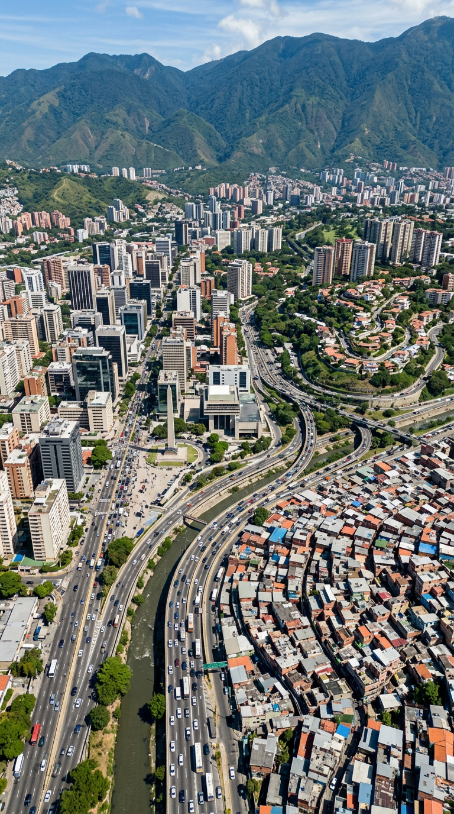
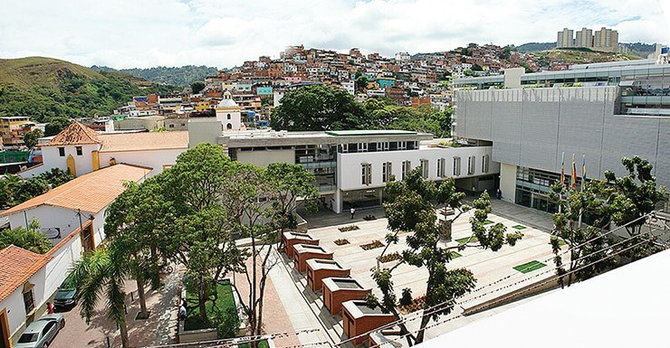
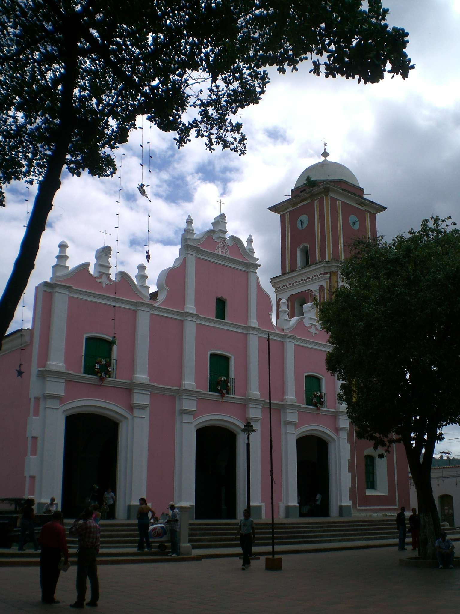
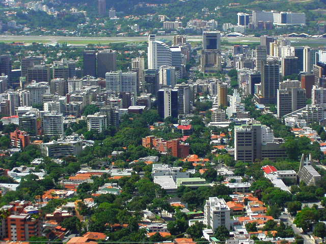
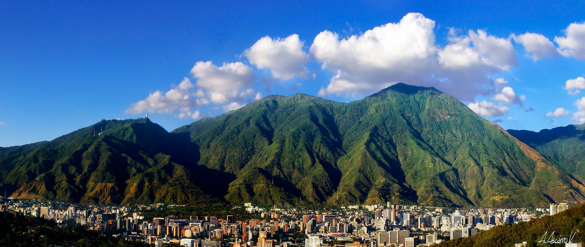
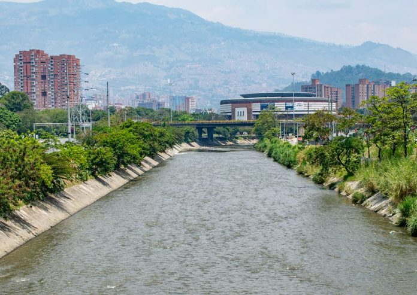
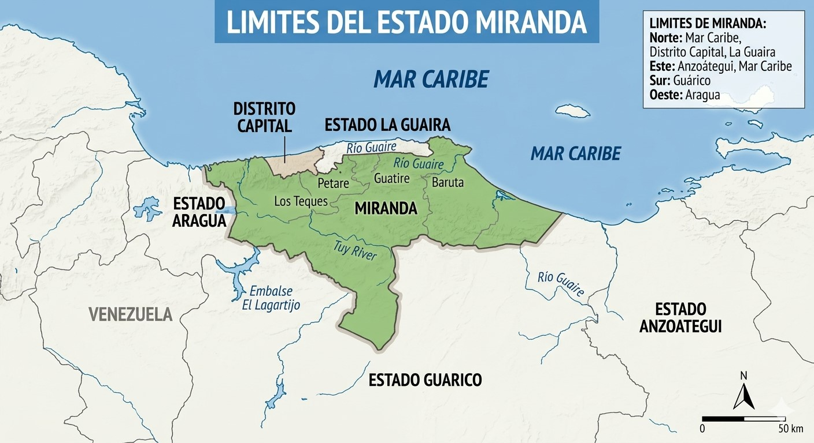

Para entender sus límites, primero debemos comprender la posición privilegiada y compleja del estado Miranda. No es un estado cualquiera; es una entidad que actúa como una bisagra entre la capital de la República, la región costera central, los fértiles valles interiores y la vasta región de los llanos. Su territorio, de 7.950 kilómetros cuadrados, es un microcosmos de la geografía venezolana, ya que en él convergen la imponente Cordillera de la Costa, las profundas depresiones de los valles del Tuy y la llanura de Barlovento, todo ello coronado por una importante fachada marítima. Esta diversidad hace que sus límites no sean simples líneas rectas en un mapa, sino fronteras dinámicas marcadas por ríos, cadenas montañosas y, en un caso particular, por una ambigüedad legal e histórica que persiste hasta nuestros días.
La frontera septentrional es, sin duda, la más compleja y la que mejor refleja la condición de Miranda como "estado puente". Para explicarla con total claridad, debemos dividirla en tres sectores distintos, viajando de oeste a este.

En su extremo noroeste, Miranda limita con el Distrito Capital, la entidad que alberga a la ciudad de Caracas. Este límite es, en esencia, una frontera urbana y metropolitana. No está definido por un río caudaloso o una montaña infranqueable, sino por una sucesión de calles, avenidas, urbanizaciones y laderas de cerros que se han fusionado en una sola y gigantesca mancha urbana. Hablamos de la Gran Caracas.
Municipios mirandinos como **Baruta** (con El Cafetal y Hoyo de La Puerta), **Chacao** (el corazón financiero y comercial de la metrópolis) y **Sucre** (el municipio más poblado de Venezuela, hogar de Petare) forman parte indisociable del este de la ciudad de Caracas. Un habitante cruza de un lado a otro sin percibir, salvo por un letrero oficial o un cambio de alcaldía, que ha cambiado de entidad federal. La Avenida Francisco de Miranda, la Autopista Francisco Fajardo o la Avenida Boyacá (Cota Mil) son arterias que tejen esta conurbación, haciendo del límite una cuestión administrativa pero no una barrera física, social o económica.





Aunque la ciudad lo ha difuminado, el límite original se apoyaba en las estribaciones del Parque Nacional El Ávila, una imponente barrera natural que separa el valle de Caracas del Mar Caribe. Algunos sectores del límite entre el Distrito Capital y el municipio Sucre de Miranda aún se enredan en las faldas de esta montaña.




Continuando hacia el este, el límite norte pasa a ser con el estado La Guaira (antiguo Vargas). Aquí la geografía manda con autoridad. La línea divisoria corre, de manera general, a lo largo de la fila maestra de la Serranía del Litoral Central, cuya máxima expresión es el ya mencionado Pico Naiguatá (2.765 msnm). Este es un límite de alturas, de crestas y de vertientes.
La frontera no es caprichosa; sigue el principio fundamental de la geografía política: la línea que separa las cuencas hidrográficas. Las aguas de lluvia que caen en la vertiente norte de la montaña escurren de forma violenta y rápida hacia el Mar Caribe a través de quebradas y ríos que pertenecen a La Guaira (como el río Osorio o el Camurí Grande). Las aguas que caen en la vertiente sur, de forma más pausada, alimentan los ríos que surcan el valle de Caracas y el este de Miranda, como el río Guaire y sus afluentes.



Esta línea divisoria está protegida en gran medida por las figuras del **Parque Nacional El Ávila (Waraira Repano)**. Este estatus de conservación ha preservado la integridad del límite natural, evitando la conurbación caótica que se da en el valle. Es una frontera de bosques nublados, fauna silvestre y silencio, en contraste radical con la bulliciosa vida metropolitana que se desarrolla apenas unos kilómetros abajo.

Finalmente, en el extremo noreste, Miranda despliega todo su potencial costero. Aquí, el límite ya no es con otra entidad política, sino con el propio Mar Caribe. El estado La Guaira termina y Miranda se asoma al océano en toda la región de Barlovento.

Este litoral se extiende desde el punto donde terminan los límites de La Guaira, a la altura de la parroquia Caruao, y abarca toda la costa de los municipios **Brión** (donde se encuentran Higuerote, Chirimena y Carenero) y **Buroz** (con Puerto Tuy y la desembocadura del río Tuy). Es una costa baja, de extensas playas de arena, manglares y ciénagas, radicalmente distinta a los acantilados y playas de bolsillo de La Guaira. Este límite marítimo no es solo geográfico, es profundamente cultural y económico, definiendo la identidad afrocaribeña de Barlovento y sustentando su economía en la pesca y el turismo. El mar aquí es una extensión del territorio mirandino, un espacio de vida que lo conecta directamente con el Gran Caribe.
